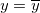
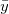
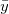

^2 \,\!")
Wie gut ist die Anpassung? Eine nahe liegende Metrik ist die Nähe der angepassten Kurve zu den tatsächlichen Datenpunkten. Vom vorhergehenden Abschnitt wissen wir, dass die Residuensumme der Quadrate (RSS) oder der reduzierte Chi-Quadrat-Wert ein quantitativer Wert ist, der zum Bewerten dieser Abstandsart verwendet werden kann. Der Wert der Summe der Fehlerquadrate (RSS) variiert von Datensatz zu Datensatz, so dass es notwendig ist, diesen Wert in einen einheitlichen Bereich neu zu skalieren. Andererseits wird der Mittelwert des Y-Werts zum Beschreiben des Datenmerkmals möglicherweise bevorzugt. In diesem Fall ist die angepasste Kurve eine horizontale Linie  und der Prädiktor X kann den Y-Wert nicht linear vorhersagen. Um dies zu prüfen, berechnen wir zunächst die Abweichung zwischen Datenpunkten und dem Mittelwert:
Bei der Methode der kleinsten Quadrate kann der TSS in zwei Teile geteilt werden: die durch Regression erklärte Abweichung und der ungeklärte Teil:
|
|
|
|
Je näher die angepasste Kurve an den Datenpunkten liegt, desto kleiner ist die RSS und desto größer ist der Anteil der Gesamtabweichung, die durch das SSreg dargestellt wird. Folglich kann das Verhältnis von SSreg zu TSS als ein Maß der Qualität des Regressionsmodells verwendet werden. Diese Menge -- bezeichnet als der Determinationskoeffizient -- wird wie folgt berechnet:

In der obigen Gleichung können Sie sehen, dass bei der Verwendung eines guten Anpassungsmodells  zwischen 0 und 1 variieren sollte. Ein Wert, der nahe an 1 liegt, weist darauf hin, dass die Anpassung gut ist.
zwischen 0 und 1 variieren sollte. Ein Wert, der nahe an 1 liegt, weist darauf hin, dass die Anpassung gut ist.
Mathematisch gesprochen beeinflusst der Freiheitsgrad . Das heißt, durch Hinzufügen von Variablen zum Modell steigt . Dies bedeutet nicht, dass die Anpassung besser wird. Um diesen Effekt zu vermeiden, können wir das korrigierte betrachten.

In der Gleichung können wir sehen, dass das korrigierte die Steigung von ausgleicht, insbesondere beim Anpassen einer kleinen Stichprobengröße (n) durch ein Modell mit mehreren Prädiktorvariablen (k). Obwohl wir den Determinationskoeffizienten als "R -Quadrat” bezeichnen, ist er eigentlich kein "Quadrat"-Wert von R. In den meisten Fällen liegt der Wert zwischen 0 und 1. Sie können aber auch negative R-Quadratwerte erhalten, wenn die Anpassung schlecht ist. Dies liegt daran, dass die Gleichung zum Berechnen von ist  . Der zweite Term wird größer als 1, wenn ein schlechtes Modell verwendet wird.
. Der zweite Term wird größer als 1, wenn ein schlechtes Modell verwendet wird.
Dennoch ist die Verwendung von oder dem korrigierten nicht ausreichend. Im folgenden Diagramm zum Beispiel mag die angepasste Kurve in den Zeichnungen B-D zwar einen hohen -Wert besitzen, die Modelle sind aber offenbar falsch. Daher ist es nötig, das Regressionsergebnis durch die Residuenanalyse zu prüfen.
Wenn der Schnittpunkt mit der Y-Achse in den linearen Fit eingeschlossen ist, gilt die Beziehung:
wobei  \; i=1..n \;") Anpassungsdaten sind,  den Mittelwert der abhängigen Variablen bezeichnet und der angepasste Wert ist.
Anpassungsdaten sind,  den Mittelwert der abhängigen Variablen bezeichnet und der angepasste Wert ist.
Die linke Seite in der oben stehenden Gleichung ist die Gesamtsumme der Quadrate, d.h.
^2")
Der erste Term rechts ist die Summe der Fehlerquadrate, d.h.
Der zweite Term rechts ist die Summe der Quadrate, die auf die Regression zurückzuführen ist, d.h.
-\bar{y})^2")
Daher TSS = RSS + SSR.
Der Koeffizient der Determination (R-Quadrat) wird definiert durch das Verhältnis von SSR zu TSS:
Deswegen misst R-Quadrat den Anteil der Variation der abhängigen Variablen über den Mittelwert, der durch die Anpassung erklärt wird, wenn der Schnittpunkt mit der Y-Achse eingeschlossen ist.
Wenn der Schnittpunkt mit der Y-Achse jedoch in der linearen Anpassung festgelegt ist, wird das obenstehende Verhältnis unter Lineare Anpassung für Schnittpunkt mit der Y-Achse eingeschlossen nicht erfüllt. Für eine schlechte Anpassung kann sich ein negativer Wert für R-Quadrat ergeben, wenn die Definition unter Lineare Anpassung für Schnittpunkt mit der Y-Achse eingeschlossen verwendet wird. Dies macht keinen Sinn.
Wenn der Schnittpunkt mit der Y-Achse in die linearen Anpassung eingeschlossen ist, gilt das Verhältnis:
)^2 + \sum_{i=1}^n (f(x_i))^2")
TSS und SSR müssen dann neu definiert werden. RSS bleibt unverändert.

)^2")
Der Koeffizient der Determination (R-Quadrat) wird folgendermaßen neu definiert:
)^2}{\sum_{i=1}^n y_i^2}")
Auf diese Weise ist der Wert von R-Quadrat immer nicht negativ. Das R-Quadrat misst den Anteil der Variation der abhängigen Variable um den Wert Null wie von der Anpassung erklärt, wenn der Schnittpunkt mit der Y-Achse festgelegt ist.
^2 \,\!")
^2 \,\!")